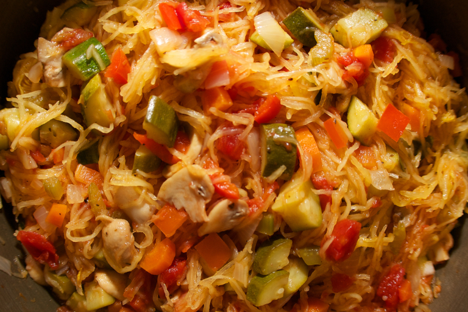

Spaghetti Squash Primaverea
Full of flavor but not gluten, this dish gets rid of my spaghetti craving with the texture of the baked squash. I change the ingredients to work with what I have on hand, so it is different every time I make it.
INGREDIENTS
- 1 spaghetti squash, cut in half and seeds removed
- 4-5 carrots, peeled and sliced
- 1 onion, chopped
- 2 cloves garlic, minced
- 2 bell peppers, any color, chopped
- 1 cup mushrooms, sliced
- 1 can petite diced tomatoes
- 1 lb ground turkey (optional)
- olive oil
- Italian blend seasonings, to taste
- 1 jar pasta sauce, gluten and dairy free
DIRECTIONS
- Heat oven to 400 degrees. Place squash cut side down in casserole dish with an inch of water. Bake until soft, about 60 minutes. Remove from pan and allow to cool enough to handle.
- In large sauce pan, heat olive oil. Add onions and carrots. Saute 5 minutes. Add the bell peppers and garlic, and saute another 5 minutes. If using turkey, add and cook until done and no pink shows. Otherwise, add remaining vegetables (canned tomatoes and mushrooms) and seasoning, stirring well. Add the pasta sauce, mix well. Turn heat to low.
- Using a fork, shred the cooled spaghetti squash to resemble noodles. Mix into the sauce mixture, stirring well until all squash is coated with sauce.
- Serve warm.